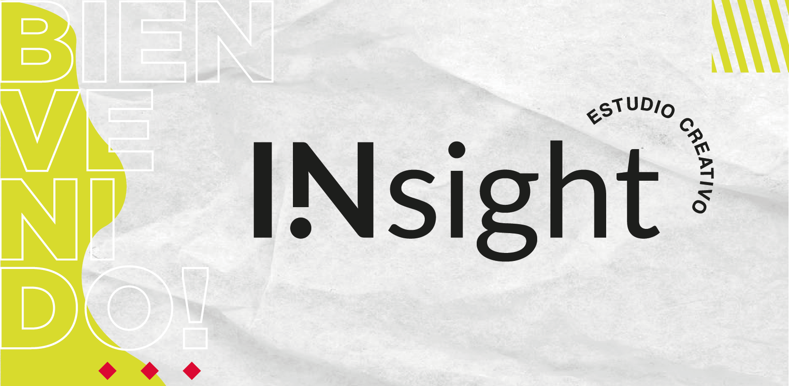

Creemos plenamente que la satisfacción y el éxito de nuestros clientes es un objetivo cumplido.

INSIGHT ESTUDIO CREATIVO
Insight es una agencia de diseño integral especializada en el diseño interdisciplinario. Ofrecemos una amplia gama de servicios: Branding, Diseño Gráfico, Digital, Fotografía, Video y Marketing Digital. Ponemos nuestra pasión y toda nuestra dedicación en cada proyecto, esforzándonos y comprometiéndonos en lograr los mejores resultados; aprendiendo de cada proyecto y de cada cliente.
BRANDING
TRABAJAMOS EN EQUIPO CON EL CLIENTE PARA CONSTRUIR NUEVAS MARCAS QUE PERDUREN Y SE DESTAQUEN
Evaluamos el mercado, el negocio particular, y seleccionamos los valores y atributos fundamentales de la empresa para lograr un concepto diferenciador. Para el desarrollo de una identidad fuerte es necesario comprender las tendencias culturales y del mercado, e identificar las fortalezas y debilidades. Creamos estrategias de Branding para dar valor a su marca. Definimos objetivos para lograr un posicionamiento consistente, estableciendo cuándo, dónde y cómo esa imagen tiene que estar presente frente al consumidor. Trabajamos en la creación y evolución de marcas a través de todo el proceso, desde su concepcion conceptual hasta su completa implementación.
DISEÑO GRÁFICO
DISEÑAMOS COMUNICACIONES VISUALES PARA TRANSMITIR MENSAJES ESPECÍFICOS A GRUPOS SOCIALES DETERMINADOS.
Hacemos posible comunicar gráficamente ideas, hechos y valores procesados y sintetizados en términos de forma y comunicación. Una Pieza Gráfica requiere de la fijación de objetivos para la cual se realiza, el seguimiento de todos los procesos y un absoluto compromiso. De esta manera no solo logramos un diseño correcto sino que nos comprometemos en el seguimiento de todo el proceso hasta la producción para obtener el resultado esperado.
DISEÑO DIGITAL
DESARROLLAMOS Y DISEÑAMOS HERRAMIENTAS DIGITALES ÚTILES, EN BUSCA DE PIEZAS FUNCIONALES Y ATRACTIVAS.
En Insight sabemos que una presencia web es de vital importancia para su empresa o proyecto en internet. Nuestro equipo se especializa en construir soluciones digitales de acuerdo a las necesidades y presupuesto de cada cliente, valorando sobre todo el perfecto equilibrio entre la funcionalidad y un correcto sentido estético. Enfocándonos en el valor de lo funcional, trabajamos en el desarrollo de herramientas útiles, en busca de piezas digitales funcionales y atractivas. Nos especializamos en el desarrollo de sitios web estáticos, autoadminstrables (desarrollados con plataforma WP) e interfases para dispositivos móviles. Proveemos servicios de SEO, diseño de newsletters, servicio de mailing, social media y generación-administración de contenidos para todos los medios digitales.
FOTOGRAFÍA Y VIDEO
CONOCEMOS LA IMPORTANCIA QUE EXISTE EN LA CREACIÓN DE UNA BUENA FOTOGRAFÍA.
En Insight cuidamos especialmente los diferentes elementos de la realización de una Fotografía de Producto, trabajando en detalle la imagen de cada artículo. Conocemos la importancia que existe en la creación de una buena fotografía de calidad para mostrar las cualidades y las caracteristicas diferenciales de un producto. Contamos con infraestructura y conocimientos para este tipo de disciplina, tanto en publicidad, como en fotografía de producto para catálogo. Nos enfocamos en destacar cualquier propiedad física del producto o artículo que proporcione una apreciación de los detalles que lo haga destacar, reflejando siempre el mejor efecto para convertirlo en un objetivo claramente atractivo para los clientes a los que va dirigido. Contamos con el equipamiento y los componentes necesarios para su preparación y posterior edición de forma rápida y eficaz.
MARKETING DIGITAL
DESARROLLAMOS TU POTENCIAL ONLINE, DESDE EL DESARROLLO WEB HASTA LA COMUNICACIÓN CON TUS POTENCIALES CLIENTES A TRAVÉS DEL MARKETING DIGITAL
Desarrollamos estrategias digitales para que cada empresa pueda estar más cerca de sus seguidores e interactuar con ellos. Hay una variedad de servicios que permitirán a una marca llegar con eficiencia y de manera innovadora a su público, que actualmente vive pendiente de las cosas nuevas que aparecen en Internet a través de sus ordenadores o dispositivos móviles. En Insight contamos con un equipo profesional y las herramientas para poder satisfacer todas las necesidades asociadas al marketing digital. Expandimos el alcance de tus canales de venta con campañas de Google Ads, Instagram Ads, Facebook Ads, email marketing; fidelizando y captando nuevas oportunidades mediante el marketing digitaly estratégico.